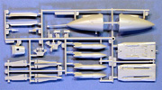

You may click on the small images above to view larger pictures
Revell-Monogram 1/48 McDonnell F-101B Voodoo
Kit #5829/5853
MSRP $16.95
Images and text Copyright � 2007 by Matt Swan
Developmental Background
The F-101 Voodoo by McDonnell can easily be viewed as the predecessor to the now infamous F-4 Phantom. The Voodoo began life as a long range bomber escort or penetration fighter designated XF-88 for the USAF. The original design grew out of a requirement set by the Army Air Force in 1946. The initial prototype flew in 1948 but was fairly disappointing. McDonnell added afterburners to the engines which provided an additional 30% power increasing top speed and reducing the take off run and even though the new prototype did win out in a fly-off competition the program was cancelled in 1950.
In 1951 the USAF issued a new requirement for a bomber escort based on analysis of Korean War missions. McDonnell dusted off the XF-88 plans and upgraded the design with more power and a larger airframe. This time they had a real winner and the contract was locked down. At this point the F-101 Voodoo designation was applied to the project. By 1953 final design modifications had been completed and the initial order for 39 units had been placed without a single prototype of the improved design having been built. By the end of 1954 the F-101 was undergoing initial flights but with the Korean War ending the need for a bomber escort faded away. This left the fighter to fill the role of air defense interceptor and reconnaissance platform.
A variety of problems were found with the initial 39 units and well over 2300 modifications were made to the type before production resumed in 1956 with operational aircraft finally being delivered in 1957. These aircraft were so different from the initial production run that in truth they should have received a completely new designation however the USAF assigned them the designation F-101B. One distinctive feature of the B verses the A was a new engine that was fully eight feet longer than the original. To avoid a complete redesign of the airframe the afterburners were allowed to extend aft beyond the fuselage giving the type its distinctive profile. These new engines also allowed the aircraft to reach Mach 2.4 in full afterburner mode. Following current trends in military thinking of the time these aircraft did not carry and machine guns or cannons rather a small store of missiles.
The F-101B Voodoo remained in service with the USAF until 1969 when it began to be withdrawn from duty. By 1972 all units had been withdrawn from USAF service and transferred to the Air National Guard. The only Air Force besides the United States to use the Voodoo was Canada. By 1982 all F-101s had been removed from National Guard service as well. Over the twenty five years that the Voodoo was in operation nineteen different versions of the aircraft were manufactured. None other than the RF-101-C which was used as a reconnaissance aircraft during the Cuban Missile Crisis and during Vietnam. The RF-101-C performed over 35000 sorties over Vietnam and 44 aircraft were lost during that time. The RF-101C nick named �Long Bird� remained in USAF inventories until 1979. Today there are no operational F-101s left but twenty five units are preserved in various aircraft museums in the United States and Canada.
The Kit
In 1985 California Angel Rod Carew got his 3000th hit, �Dreamgirls� closed its run at the Imperial Theater in New York City after 1522 performances, the New York Yankees retired Phil Rizzutos #10, Clarence Nash, the voice of Donald Duck, passed away, Bobby Ewing was killed of in the television series �Dallas� and the Monogram Company made their initial released of the 1/48 scale injection molded McDonnell F-101 Voodoo, kit number 5829. To date this is the only 1/48 scale model of this aircraft ever kitted and released to the modeling public and as with most of the molds held by Monogram (now Revell) they make a comeback every five or ten years. In 1990 the kit was reissued (as Monogram) with markings for the Canadian Lynx Squadron, dropping the USAF markings from the 1985 release. Again in 2007 the kit resurfaced (as Revell) now with markings for two USAF Interceptor Squadrons and a new kit number 85-5853.
During the 1970s and 1980s the industry standard for injection molded kits (with the exception of a few European manufactures) was to use fine raised lines to distinguish panels and other surface details. This kit fell into that standard with very delicate raised panel lines and raised rivet detail throughout. The 1985 and 1990 kit releases were of a white high pressure injection polystyrene but the 2007 release is of the more conventional light gray that we are used to seeing these days in out model kits. The molds were of the highest quality material originally and have survived very well over the last twenty two years. Where the earlier releases of the kit displayed very crisp molding with no flash or sink marks this holds true of the 2007 release as well. This particular aircraft type was only used by the USAF and the RCAF but the model kit represents the USAF B model best. To model the RCAF B model you will need to remove some of the exterior electronics blisters and pay careful attention to your reference material. If you have not noticed by this time if you hold your mouse cursor over the box art image at the beginning of this article you can see the 1990 RCAF box art.
This kit is well detailed with a rotating armament door, detailed cockpit and detailed landing gear bays. It can be modeled with flaps deployed and speed brakes open. The kit includes two identical seated crew figures with a single positionable arm per figure. The parts fit together fairly well and only minimal putty will be required. Unfortunately the raised surface detail requires special care when fixing seams. The kit includes armament options for Falcon Missiles, Genie Missiles and drop tanks. No options are given for a nuclear bomb load which some aircraft were modified to carry. Clear parts include a canopy that can be modeled in the open or closed position with internal wind screen and rear view mirrors along with a reflective gun sight. The main canopy displays well defined raised frame lines and good clarity. The kit contains five sprues of light gray (or white depending on year of issue) plastic parts with a total of ninety seven pieces. Add the nine clear parts for a total of one hundred six pieces in the box.


You may click on the small images above to view larger pictures
Decals and Instructions
In 2007 Revell overhauled the lay-out of the instructions and took it from the large, awkward single sheet format to a more conventional and (in my opinion) easier to use pamphlet format. All instructions of this kit prior to 2007 are printed on a single sheet similar in size to an A2 sheet with a nice historical background of the aircraft and a good (for the day) color chart. Colors were given by name only with no FS numbers or paint codes. There were two FS code numbers given for the USAF exterior scheme. We got thirty two assembly steps with a variety of construction tips scattered throughout. Two panels were devoted to exterior painting and decal placement for a single USAF bird and the Canadian Lynx unit.
The 2007 issue of the instructions appears in a nice A4 sized eight page pamphlet that opens with a very brief history of the aircraft. The original instructions gave a much better background of the type. We get a good color chart this time with several FS numbers and color names. Still, there are no manufacture paint codes included. The assembly instructions follow the same order as with the earlier versions but are better segregated with more well defined assembly tips and painting instructions. The decal placement page has been rewritten to cover the two USAF options included with this release version.
In the decal department all versions seem to be somewhat brief as for markings. Whether we are talking new or old here we get basic national markings and squadron insignia. We get very few service and warning stencils. Decal quality looks good with all versions with print registry being very tight and color density looking good. Decals are all nicely thin and all behave well with standard setting solutions. To reiterate on what markings come with what kit the 1985 release includes a single USAF unit and a single RCAF unit, the 1990 release contains only the markings for the Canadian Lynx unit and the 2007 release contains markings for two USAF Interceptors, one from Davis Monthan AFB and one from Grand Forks AFB. You may click on either of the small decal images to view full sized scans.
Accessories
As this kit has been knocking around for a while and is in itself a piece of modeling history I felt it appropriate to give the various accessories a little better coverage than usual. Since the date of original release the aftermarket industry has grown in leaps and bounds with countless little cottage industry shops popping up offering some pretty neat add-ons and conversions. Lets begin with the obvious ones � Decals.
Over the last twenty some odd years Eagle Strike Productions (now owned by Squadron) has done five different sets of decals for the Voodoo three of which are currently available.
At right are clickable images from one of those Eagle Strike sets. One thing you get here that is lacking with the kit decals are plenty of service stencils and warning markings. The decal instructions include painting guidelines as well as a list of reference material for the aircraft type. As with all Eagle Strike decals the print registry is excellent, color density is top notch and all colors are crisp and vibrant. These decals are very thin and lay down nicely. They respond well with standard setting solutions and expand the modeling possibilities of your kit. Almark Decals did two sheets One (AKA4821) with a nice RCAF unit and a very colorful USAF Nevada aircraft. This sheet is good for six different aircraft in total; CF-101B, F-101B, RF-101A, RF-101C, RF-101H and F-101A. The other sheet from these guys (AKA4822) will do four aircraft; F-101B, F-101C, RF-101C and RF-101G/H. C&H Aero did two sets and Expert�s Choice did three different sets. This certainly gives the modeler a goodly selection of aircraft to work with.
There�s some pretty nice reference material out there such as two sets of 1/48 scale plans from 80 Detail and Scale along with books such as �Air Force Legends� from Ginter Books, F-101 Voodoo from Hall Park Books, McDonnell F-101 Voodoo from Osprey Air Combat books and two volumes of Detail and Scale by Bert Kinzey just to mention a few. Eduard does two sets of paint masks along with a very nice set of photo etched detail pieces designed for this kit. EZ Mask also does a single set of paint masks for this kit. Black Magic also has a mask set available for the kit.
If this is not enough to satisfy your desire to build something different from what comes out of the box you can move into more complex conversions. C&H Aero did a resin nose conversion to make the Monogram kit into a RF-101C but it is a pretty pricey conversion set. If you want to model a reccon or an A version of the Voodoo you might want to look at what Koster Aero Enterprise has to offer. Bill Koster did a great conversion package that includes new resin burner cans for these early model Voodoos along with a sheet of vacuform parts providing for a new nose for either version, corrected landing gear, a blank for the rotating gun platform and everything needed to change the aircraft over to the single seat version including a new canopy. The set does not include decals which is okay because as already discussed we have plenty of options there already. Keep in mind that Bill Koster worked extensively with Monogram during the 70s and 80s and his conversion kits are almost always an easy plug-in package for a Monogram kit. Also from Koster is a set of just the clear parts for a single seat aircraft, a package that offers only the short early burner cans and a package that provides FOD covers for several aircraft. The large conversion set contains all these pieces except the FOD covers. You can click on the small images below to view larger pictures of the Koster set.
While Bill�s set is probably the most comprehensive conversion set out there others do exist like from Legend Productions. Legend has a cute little set for the F-101B kit that allows for the avionic bay to be opened up. This set, done in a light tan resin with minimal air bubbles provides the modeler with two very well detailed electronics bays representing both the left and right sides of the aircraft. These bays include aft bulkheads and fully detailed access panels. The resin is quite fine but the package is completely lacking in any instructions so the modeler had best study the conversion kit box art closely and look for some reference material showing these bays open.
Conclusions
This kit really is a classic kit. It represents an important aircraft in aviation history and an interesting piece of history in the scheme of modeling aircraft. Parts are well designed and fit together well. Decals are somewhat brief lacking adequate service stencils and warning markings but are workable. Instructions are relatively good; better on the new release verses the old release. Parts quality is good with no flash evident on parts, no sink marks or obvious injector pins. Yes, the kit does have raised panel lines but that can be dealt with. The modeler can go ahead and build it as it is manufactured or can go to the trouble of scribing the kit. Aftermarket options are large with a good variety of decals out there for virtually any model of the aircraft you could hope to build and with the Koster and C&H Aero conversion sets, all within the modeler�s grasp. I give this kit a good recommendation and would encourage any jet modeler to add one to his collection.
Here is a link to Michael Stanley's Koster F-101A VooDoo over at the Pelikan Model Club.


{kind=link}
{kind=link}
{kind=link}
{kind=link}
{kind=link}
{kind=link}
{kind=link}
{kind=link}
{kind=link}
{kind=link}
{kind=link}
{kind=link}
{kind=link}
{kind=link}
{kind=link}
{kind=link}
{kind=link}